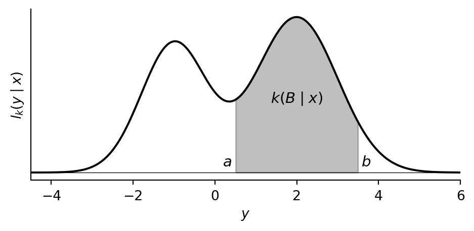
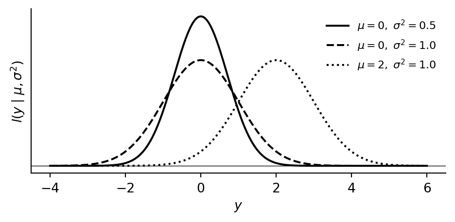
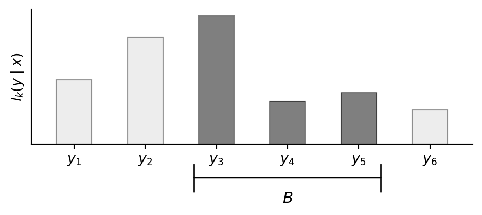
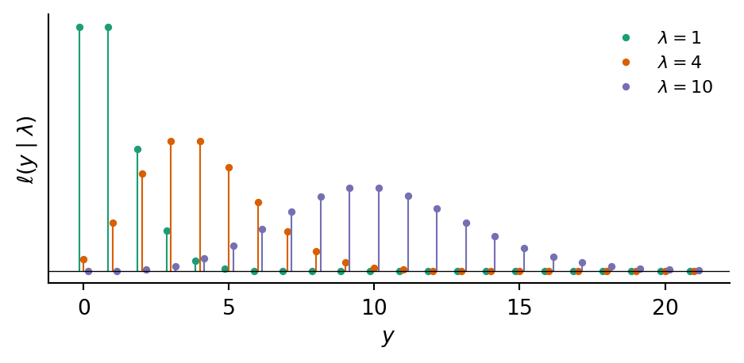
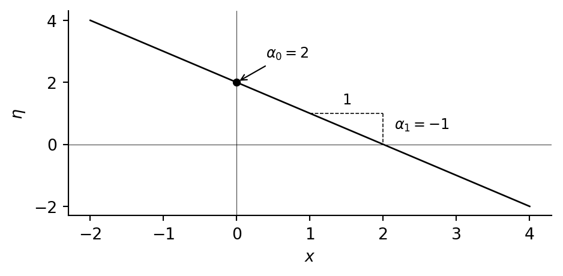
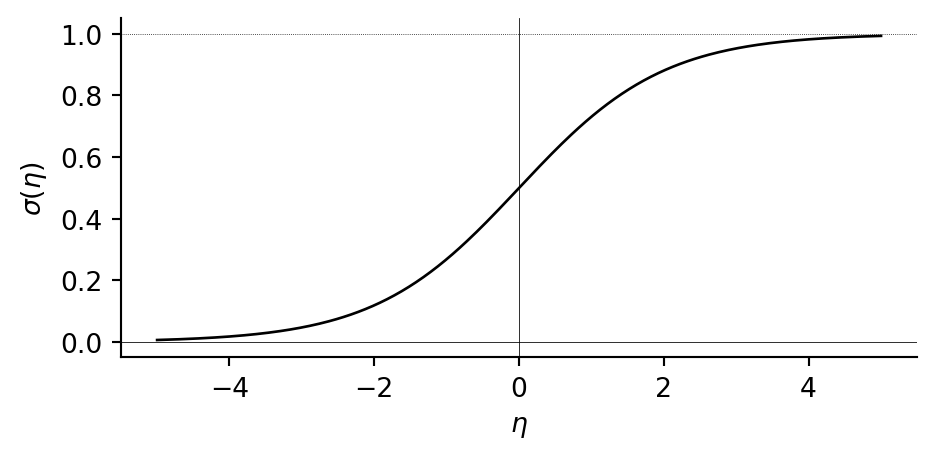
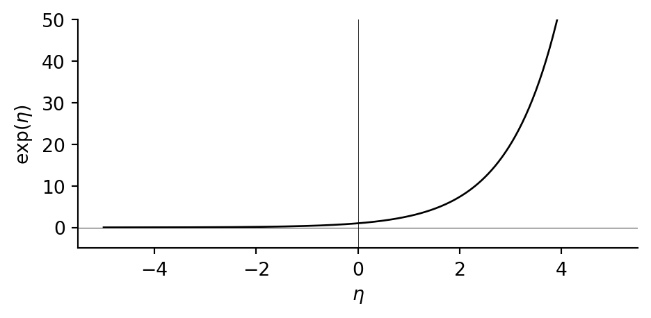
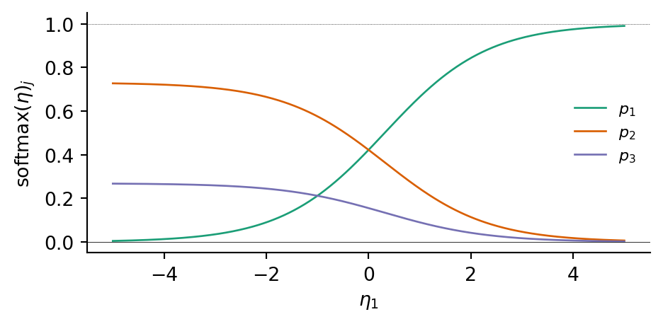

4 Hybrid models
\[ \def\then{\mathbin{;}} \def\kernel{\rightsquigarrow} \def\swap{\mathsf{swap}} \def\id{\mathsf{id}} \def\cp{\mathsf{copy}} \def\del{\mathsf{del}} \def\supp{\mathsf{supp}} \def\ivmark#1{[\![#1]\!]} \]
So far, all our models have lived in the world of finite sets: every wire carried a variable with finitely many values, and every kernel was specified by a finite table of numbers. But many quantities we care about take continuous values. In this chapter, we extend the string-diagrammatic framework to handle continuous and mixed-type variables.
4.1 General kernels
In the chapter on discrete graphical models, a kernel \(f : X \kernel Y\) was specified by listing a number \(f(y \mid x)\) for every pair \((x, y)\). This works when both \(X\) and \(Y\) are finite, but many quantities of interest take values in continuous spaces like \(\mathbb{R}\) or \(\mathbb{R}_{\geq 0}\), where we cannot simply enumerate all possible outputs. To handle such variables, we need to define kernels between infinite spaces. This requires three concepts: a notion of event that captures which subsets of the space we care about, a notion of measure that assigns numbers to events, and a generalization of kernels that assigns numbers to events dependent on input values.
4.1.1 Events
In the introduction we defined an event as any subset \(E \subseteq \Omega\) of a finite sample space \(\Omega\), and observed that logical operations on events correspond to set operations: “not \(E\)” is the complement \(E^\text{c}\), “\(E_1\) and \(E_2\)” is the intersection \(E_1 \cap E_2\), and “\(E_1\) or \(E_2\)” is the union \(E_1 \cup E_2\).
When the sample space is infinite, say \(\Omega = \mathbb{R}\), we need to be more careful. It turns out that there is no way to consistently assign probabilities to every subset of \(\mathbb{R}\). Instead, we fix a collection \(\Sigma\) of subsets that we agree to treat as events, and only assign probabilities to those.
Which subsets should count? The collection \(\Sigma\) should be rich enough that every event we could want to express is included, and it should be closed under the logical operations we rely on:
- Tautology and contradiction. The entire space \(\Omega\) (“something happens”) and the empty set \(\varnothing\) (“nothing happens”) are events.
- Complement. If \(E\) is an event, then “not \(E\)”, i.e. \(E^\text{c}\), is also an event.
- Sequential unions. If \(E_1, E_2, E_3, \ldots\) is a sequence of events, then \(\bigcup_{n=1}^{\infty} E_n\) is also an event.
The third rule says that if we can enumerate meaningful events \(E_n\), then “at least one of \(E_n\) holds” should also be a meaningful event too. Together with complements, this also gives us “all of them hold” by De Morgan’s law: \(\bigcap_n E_n = \bigl(\bigcup_n E_n^\text{c}\bigr)^\text{c}\). Finite unions and intersections are the special case where all but finitely many \(E_n\) are \(\Omega\) or \(\varnothing\).
A collection \(\Sigma\) of subsets of \(\Omega\) satisfying these three rules is called a \(\sigma\)-algebra, and its elements are called events.
Definition 4.1 A measurable space is a pair \((\Omega, \Sigma)\) consisting of a set \(\Omega\) and a \(\sigma\)-algebra \(\Sigma\) on \(\Omega\). We call the elements of \(\Sigma\) the events of \((\Omega, \Sigma)\). When we refer to a measurable space by a single letter, such as \(X\), we write \(\Sigma_X\) for its \(\sigma\)-algebra.
Example 4.2 (Events on the real line) On \(\Omega = \mathbb{R}\), start with the closed intervals \([a, b]\) for all \(a \leq b\) and close under the three rules above. The resulting collection of events is called the Borel \(\sigma\)-algebra \(\mathcal{B}(\mathbb{R})\). It contains every open set, closed set, and interval. This is the collection we will always use when a wire carries a real-valued variable.
There are many other collections that also generate the Borel \(\sigma\)-algebra, such as the open intervals \((a, b)\), half-open intervals \([a, b)\), and closed rays \((-\infty, a]\). The latter is the basis for cumulative distribution functions (CDFs) which characterize the distribution of a real-valued random variable \(X\) by \(F_X(a) := p((-\infty, a]) = p(X \leq a)\).
4.1.2 Measures
In the introduction we defined a probability measure on a finite set \(\Omega\) by two properties: normalization (\(p(\varnothing) = 0\) and \(p(\Omega) = 1\)) and additivity (\(p(E_1 \cup E_2) = p(E_1) + p(E_2)\) whenever \(E_1\) and \(E_2\) are mutually exclusive). If we drop the normalization requirement, we get a more general notion of measure that assigns a non-negative number to each event, but does not require the total to be 1. Measures are the right level of generality for kernels: they allow us to talk about unnormalized weights and likelihoods without forcing us to normalize them into probabilities.
In the general setting, a measure is still a function \(\mu : \Sigma \to [0, \infty]\) that assigns each event a non-negative number. However, we must extend the additivity requirement to hold for any sequence of pairwise disjoint events. If \(E_1, E_2, E_3, \ldots\) are pairwise disjoint, then \[ \mu\Bigl(\bigcup_{n=1}^{\infty} E_n\Bigr) = \sum_{n=1}^{\infty} \mu(E_n). \]
Why is this natural? For finite measures, it is equivalent to continuity from above: if \(E_1 \supseteq E_2 \supseteq E_3 \supseteq \cdots\) is a decreasing sequence of events that shrinks to nothing (\(\bigcap_n E_n = \varnothing\)), then \(\mu(E_n) \to 0\). In other words, if we iteratively shrink an event until nothing remains, its measure should decrease to zero.
Definition 4.3 A measure on a measurable space \((\Omega, \Sigma)\) is a function \(\mu : \Sigma \to [0, \infty]\) satisfying:
- Empty set. \(\mu(\varnothing) = 0\).
- Countable additivity. If \(E_1, E_2, E_3, \ldots \in \Sigma\) are pairwise disjoint, then \(\mu\bigl(\bigcup_{n=1}^\infty E_n\bigr) = \sum_{n=1}^\infty \mu(E_n)\).
A measure \(\mu\) is called a probability measure if in addition \(\mu(\Omega) = 1\).
4.1.3 Kernels
In the chapter on discrete graphical models we defined a discrete kernel \(f : X \kernel Y\) between finite sets by specifying a non-negative number \(f(y \mid x)\) for each input \(x \in X\) and output \(y \in Y\). We can equivalently describe \(f\) in terms of events: for any subset \(B \subseteq Y\), set \[ f(B \mid x) := \sum_{y \in B} f(y \mid x). \] This gives us the total weight that \(f\) assigns to the event \(B\), given input \(x\). The values on individual points are recovered by taking \(B = \{y\}\).
The event-based formulation generalizes to infinite spaces where it is not longer possible to compute the measure of a set from individual points. Thus, a general kernel \(k : X \kernel Y\) assigns a non-negative number \(k(B \mid x)\) to each input \(x\) and each event \(B \in \Sigma_Y\).
Definition 4.4 A kernel \(k : X \kernel Y\) between measurable spaces \((X, \Sigma_X)\) and \((Y, \Sigma_Y)\) assigns to each input \(x \in X\) and each event \(B \in \Sigma_Y\) a non-negative number \(k(B \mid x)\), such that:
- For each fixed \(x \in X\), the function \(B \mapsto k(B \mid x)\) is a measure on \((Y, \Sigma_Y)\).
- For each fixed \(B \in \Sigma_Y\), the function \(x \mapsto k(B \mid x)\) is measurable.
If \(k(Y \mid x) = 1\) for all \(x\), we call \(k\) a probability kernel. We call \(k\) finite if there is a uniform bound \(r\) such that \(k(Y \mid x) \leq r\) for all \(x \in X\). We will always assume that kernels are finite.
Condition 1 is the substantive requirement: each input produces a measure on the output space. Condition 2 is a technical regularity condition ensuring that the kernel interacts well with the \(\sigma\)-algebras. All kernels we construct in practice will satisfy it automatically, so we will not check it explicitly.
4.1.4 Density functions
A convenient way to specify a kernel is through a density function that describes how weight is spread across the output space.
Continuous outputs. Consider a kernel \(k : X \kernel \mathbb{R}\) whose output is a real-valued variable. For each input \(x\), suppose we have a non-negative function \(y \mapsto \ell_k(y \mid x)\) whose graph is a curve over the real line. We think of \(\ell_k(y \mid x)\) as the weight per unit length that \(k\) places near the output value \(y\). The total weight assigned to an event \(B \in \Sigma_Y\) is then the area under this curve above \(B\):
Mathematically, this area is given by the \[ k(B \mid x) = \int_B \ell_k(y \mid x) \, dy. \] We call \(\ell_k\) the density of \(k\); the precise definition will follow shortly. For a probability kernel, the total area under the curve equals 1. Note that a single point \(\{y\}\) has zero width and therefore zero area: \(k(\{y\} \mid x) = 0\). For continuous variables, individual outcomes always have probability zero.
Example 4.5 The Gaussian (or normal) density with mean \(\mu\) and variance \(\sigma^2\) is \[ \ell(y \mid \mu, \sigma^2) = \frac{1}{\sqrt{2\pi\sigma^2}} \exp\!\Bigl(-\frac{(y - \mu)^2}{2\sigma^2}\Bigr). \] We write \(\mathsf{Normal}(\mu, \sigma^2)\) for the probability measure with this density — its graph is the familiar bell curve, centered at \(\mu\) with spread controlled by \(\sigma^2\). Since the total area is 1 for every choice of \((\mu, \sigma^2)\), varying the inputs defines a probability kernel \(k : \mathbb{R} \times \mathbb{R}_{>0} \kernel \mathbb{R}\).

Discrete outputs. In the discrete setting, each output value \(y\) carries a weight \(\ell_k(y \mid x)\), which we can picture as a bar of that height. The total weight on an event \(B\) is the sum of bar heights:

In formulas, the total weight on \(B\) is \[ k(B \mid x) = \sum_{y \in B} \ell_k(y \mid x). \] This is exactly the formula from the beginning of the previous section: the values \(f(y \mid x)\) that defined a discrete kernel in the chapter on discrete graphical models are precisely its density. Since a discrete kernel is completely determined by its density and vice versa, we treated the two interchangeably in the discrete setting. In the continuous case this identification breaks down, because not all kernels have densities.
Base measures and densities. In both cases above, the kernel is determined by integrating a non-negative function against a fixed measure on the output space: Lebesgue measure (length / area) in the continuous case, counting measure (each point has mass 1) in the discrete case. We call this fixed measure the base measure and the function the density.
Definition 4.6 Let \(\nu\) be a measure on the output space \(Y\). A non-negative function \(\ell_k(y \mid x)\) is a density of the kernel \(k : X \kernel Y\) with respect to \(\nu\) if \[ k(B \mid x) = \int_B \ell_k(y \mid x) \, \nu(dy) \] for every \(x \in X\) and every event \(B \in \Sigma_Y\).
The integral above is the Lebesgue integral from measure theory. Don’t worry if you are not familiar with it. Simply think of it as continuous version of the sum.
4.1.5 String diagrams carry over
The string-diagrammatic language from the chapter on discrete graphical models extends to general kernels with almost no changes. The main difference is that the graphical conditioning procedure relies on densities to work. This means you can work with general kernels, even if you do not know measure theory.
Deterministic functions. A measurable function \(f : X \to Y\) defines a kernel by \[ k_f(B \mid x) := \ivmark{f(x) \in B}, \] which assigns full weight to the unique output \(f(x)\). The structural kernels \(\id\), \(\swap\), \(\cp\), and \(\del\) are all deterministic. Hence, their formulas are literally the same as before, with the Iverson bracket \(\ivmark{y = f(x)}\) replaced by \(\ivmark{f(x) \in B}\).
Composition. Sequential composition of \(k : X \kernel Y\) and \(k' : Y \kernel Z\) is defined by replacing the sum over \(Y\) with an integral: \[ (k \then k')(B \mid x) := \int_Y k'(B \mid y) \, k(dy \mid x). \] When \(Y\) is a finite set, the integral reduces to the familiar sum \(\sum_{y \in Y} k'(B \mid y)\, k(y \mid x)\). Parallel composition is characterized by its values on product events: \[ (k_1 \otimes k_2)(B_1 \times B_2 \mid x_1, x_2) = k_1(B_1 \mid x_1) \cdot k_2(B_2 \mid x_2). \] This formula only specifies the kernel on “rectangles” \(B_1 \times B_2\), but a standard extension result guarantees that these values determine the kernel on all events in the product space (see the box below for details).
NoteProduct \(\sigma\)-algebras and product measures
When two measurable spaces \((X, \Sigma_X)\) and \((Y, \Sigma_Y)\) are combined, their product space \(X \times Y\) carries the product \(\sigma\)-algebra \(\Sigma_X \otimes \Sigma_Y\), defined as the smallest \(\sigma\)-algebra containing all rectangles \(B_1 \times B_2\) with \(B_1 \in \Sigma_X\) and \(B_2 \in \Sigma_Y\). This \(\sigma\)-algebra contains many events beyond rectangles — for instance, discs in \(\mathbb{R}^2\) — but a finite measure that is defined consistently on rectangles extends uniquely to the full product \(\sigma\)-algebra. This is why the formula for parallel composition, stated only on rectangles, determines the kernel on all product events.
The same principle gives us product measures. Given measures \(\nu_U\) on \(U\) and \(\nu_V\) on \(V\), the product measure \(\nu_U \otimes \nu_V\) is the unique measure on the product space \(U \times V\) satisfying \[ (\nu_U \otimes \nu_V)(B_1 \times B_2) = \nu_U(B_1) \cdot \nu_V(B_2). \] For instance, Lebesgue measure on \(\mathbb{R}^2\) (area) is the product of Lebesgue measure on \(\mathbb{R}\) (length) with itself. Product measures appear naturally when a kernel has multiple outputs: if each output has a base measure, the joint base measure is their product.
Algebraic laws. All the algebraic laws verified in the discrete setting continue to hold for general kernels. The proofs are the same calculations, with sums replaced by integrals. In particular, any two diagrams that could be deformed into each other in the discrete setting still represent the same kernel.
Conditional independence. The graphical test for conditional independence from the conditioning chapter remains valid for general kernels.
Graphical conditioning. Pre-conditioning on an input works exactly as before: given a kernel \(g : X \otimes Y \kernel U\), fixing \(X = \bar{x}\) yields \(g_{\mid X = \bar{x}}(B \mid y) := g(B \mid \bar{x}, y)\). This is still a well-defined kernel.
Pre-conditioning on an output requires the kernel to have a density; we simply plug the observed value in. Suppose \(g : X \kernel U \otimes V\) has density \(\ell_g(u, v \mid x)\) with respect to a product base measure \(\nu_U \otimes \nu_V\). Pre-conditioning on \(U = \bar{u}\) substitutes \(\bar{u}\) for \(u\), giving a kernel with density \(\ell_g(\bar{u}, v \mid x)\): \[ g_{\mid U = \bar{u}}(B \mid x) = \int_B \ell_g(\bar{u}, v \mid x) \, \nu_V(dv). \] This is exactly what we did in the discrete case from the conditioning chapter: for a discrete kernel \(g : X \kernel U \otimes V\), pre-conditioning on \(U = \bar{u}\) gave \(g_{\mid U = \bar{u}}(v \mid x) = g(\bar{u}, v \mid x)\). Since the values of a discrete kernel are its density with respect to counting measure, this was already a special case of plugging \(\bar{u}\) into the density.
If \(g : X \kernel U\) has density \(\ell_g\) and we fix its only output \(U = \bar{u}\), there are no remaining variables to integrate over. The resulting kernel \(g_{\mid U = \bar u} : X \kernel I\) assigns each \(x \in X\) the likelihood weight \(\ell_g(\bar{u} \mid x)\). This is the case that arises most often in practice.
4.2 Parametric kernels
In the discrete setting, a kernel \(f : X \kernel Y\) was fully specified by a finite table of values \(f(y \mid x)\). When the input or output space is infinite, we need a formula instead. Our approach is compositional: we build complex kernels by composing a small number of simple, reusable pieces. Three ingredients suffice:
- A base family — a standard parametric distribution that does all the stochastic work.
- A predictor — a deterministic function that computes the base family’s parameters from the inputs.
- Adaptor maps — deterministic functions that reshape the input or output domain.
We introduce each ingredient in turn, then show how composing them yields the standard regression kernels.
4.2.1 Base families
Each parametric distribution defines a base family — a kernel \(k_{\text{base}} : \Theta \kernel Y\) that takes a parameter value as input and returns the corresponding distribution. We discuss the three most common ones here; Section 1 lists further families available in PyTorch.
Gaussian (\(Y = \mathbb{R}\)). The Gaussian (normal) family is parameterised by a mean \(\mu \in \mathbb{R}\) and variance \(\sigma^2 > 0\), with density \[ \ell(y \mid \mu, \sigma^2) = \frac{1}{\sqrt{2\pi\sigma^2}} \exp\!\Bigl(-\frac{(y - \mu)^2}{2\sigma^2}\Bigr). \] Its graph is the bell curve from Example 4.5: centred at \(\mu\), with spread controlled by \(\sigma^2\). The Gaussian family is the default for real-valued outputs because the central limit theorem guarantees that any quantity arising as a sum of many small, independent effects will be approximately normally distributed.
Bernoulli (\(Y = \{0,1\}\)). The Bernoulli family has a single parameter \(p \in (0,1)\) and mass function \[ \ell(y \mid p) = p^{\,y}\,(1-p)^{1-y}. \] It assigns probability \(p\) to \(y = 1\) and \(1-p\) to \(y = 0\). This is the unique single-parameter distribution on \(\{0,1\}\), so it is the only option for modelling a binary outcome.
Poisson (\(Y = \mathbb{N}_0\)). The Poisson family is parameterised by a rate \(\lambda > 0\), with mass function \[ \ell(y \mid \lambda) = \frac{e^{-\lambda}\,\lambda^{\,y}}{y!}. \] It models counts of independent, memoryless events occurring at a fixed rate, for example arrivals, mutations, or photon hits. It arises as the limit of a Binomial distribution with many trials and a small per-trial probability. The mean and variance both equal \(\lambda\).

A base family on its own already defines a kernel: feed in a parameter value, get out a distribution. To build a kernel whose input is not a bare parameter but an arbitrary collection of variables, we precompose with a deterministic function — the predictor.
4.2.2 Predictors
A predictor is a deterministic function \(h : X_1 \otimes \cdots \otimes X_n \to H\) that maps the inputs into a predictor space \(H\). A response map then converts \(H\) into valid parameters for the base family (see below). The simplest and most common choice is a linear predictor: \[ \eta \:;=\; h_{\text{lin}}(x_1, \ldots, x_n) \;=\; \alpha_0 + \alpha_1 x_1 + \cdots + \alpha_n x_n. \] This accepts any mix of discrete and continuous inputs: a binary input \(x_j \in \{0,1\}\) switches its coefficient on or off, while a continuous input \(x_j\) contributes proportionally. Each coefficient \(\alpha_j\) has a direct interpretation: the amount by which a one-unit increase in \(x_j\) shifts the predicted value, with all other inputs held fixed.

Nothing in the compositional construction requires the predictor to be linear. We can replace \(h_{\text{lin}}\) with polynomial features, spline bases, or a neural network without changing anything else.
4.2.3 Adaptor maps
An adaptor map is a deterministic function inserted before or after the base family to reshape domains. The most common ones are described below.
Sigmoid. The sigmoid function \(\sigma(\eta) = \frac{1}{1 + e^{-\eta}}\) maps \(\mathbb{R}\) into the open interval \((0,1)\). It is an S-shaped curve, centred at \(\eta = 0\) where \(\sigma(0) = \tfrac{1}{2}\), and it saturates towards \(0\) and \(1\) for large \(|\eta|\).

Exponential. The exponential function \(\exp(\eta) = e^{\eta}\) maps \(\mathbb{R}\) into \(\mathbb{R}_{>0}\). It is convex and grows rapidly for positive \(\eta\), while approaching \(0\) for negative \(\eta\).

Softmax. The softmax function maps \(\mathbb{R}^K\) into the probability simplex \(\Delta^{K-1} = \{(p_1, \ldots, p_K) \in [0,1]^K : p_1 + \cdots + p_K = 1\}\): \[ \mathrm{softmax}(\eta_1, \ldots, \eta_K)_j = \frac{e^{\eta_j}}{\sum_{k=1}^K e^{\eta_k}}. \] The sigmoid is the special case with \(K = 2\).

Thresholding. The map \(n \mapsto \ivmark{n > 0}\) collapses a count in \(\mathbb{N}_0\) to a binary indicator in \(\{0,1\}\), recording whether any events occurred.
Each of these maps can play two roles in the compositional pattern. Placed between the predictor and the base family, it acts as a response map \(\varphi : H \to \Theta\) converting the predictor’s output into valid parameters. Placed after the base family, it acts as an output transformation \(t : Y \to Z\) redirecting the output to a different target space.
For example, the exponential can serve as a response map ensuring a positive Poisson rate \(\lambda = e^\eta\), or as an output transformation turning a Gaussian into a log-normal distribution on \(\mathbb{R}_{>0}\). Similarly, the sigmoid produces a Bernoulli probability \(p = \sigma(\eta)\) when used as a response map, or a logit-normal distribution on \((0,1)\) when applied after a Gaussian. Thresholding is used only as an output transformation: postcomposing a Poisson kernel with it gives a binary indicator, the basis of hurdle models. When no reshaping is needed, the identity serves as a trivial adaptor map.
4.2.4 Composing the pieces
By assembling the above pieces, we can build parametric kernels with any desired input and output types:
- Choose a base family matching the output type.
- Choose a predictor.
- Insert response and output maps as needed.
This corresponds to the compositional pattern: \[ X \xrightarrow{\; h \;} H \xrightarrow{\;\varphi\;} \Theta \xrightarrow{\; k_{\text{base}} \;} Y \xrightarrow{\; t \;} Z, \] where functions are interpreted as deterministic kernels. Any of the adaptor maps can be the identity when no transformation is needed. The construction is modular: changing the predictor does not affect the base family or the output transformation, and vice versa.
NoteConnection to generalized linear models
When the predictor is linear and the base family belongs to the exponential family, statisticians call the resulting kernel a generalized linear model (GLM). In that literature, \(\varphi^{-1}\) is called the link function and \(\varphi\) the response function or inverse link. Linear regression, logistic regression, and Poisson regression are the three canonical GLMs, corresponding to the Gaussian, Bernoulli, and Poisson base families with identity, sigmoid, and exponential response maps respectively.
4.2.5 Common regression kernels
We now show how the compositional pattern specializes to the standard regression kernels. Each uses the linear predictor. The table below summarizes the remaining choices.
| Kernel | Base | Response \(\varphi\) | Transform \(t\) | Effect of inputs |
|---|---|---|---|---|
| Linear | \(\mathsf{Normal}\) | identity | — | additive on mean |
| Logistic | \(\mathsf{Bernoulli}\) | sigmoid | — | additive on log-odds |
| Categorical | \(\mathsf{Categorical}\) | softmax | — | additive on log-odds per class |
| Log-normal | \(\mathsf{Normal}\) | identity | \(\exp\) | multiplicative on median |
| Poisson | \(\mathsf{Poisson}\) | \(\exp\) | — | multiplicative on rate |
Linear regression
\[ \ell_k(y \mid x_1, \ldots, x_n) = \ell_{\mathsf{Normal}}(y \mid \eta,\; \sigma^2), \qquad \eta = \alpha_0 + \alpha_1 x_1 + \cdots + \alpha_n x_n. \]
The output is a bell curve centred at \(\eta\). The variance \(\sigma^2\) controls the spread and does not depend on the inputs, so it represents irreducible noise. Each coefficient \(\alpha_j\) tells us how much a one-unit increase in \(x_j\) shifts the centre of the output distribution. In particular, \(\mathbb{E}[Y \mid x] = \eta\), so the inputs affect the output additively: changing \(x_j\) by \(\Delta\) shifts the expected output by \(\alpha_j \Delta\).
Logistic regression
\[ k(y = 1 \mid x_1, \ldots, x_n) = \sigma(\eta), \qquad \eta = \beta_0 + \beta_1 x_1 + \cdots + \beta_n x_n. \]
The sigmoid squashes \(\eta \in \mathbb{R}\) into a probability \(p = \sigma(\eta)\). Because \(\sigma\) is nonlinear, the inputs do not affect \(p\) additively. Instead, they act additively on the log-odds scale: \(\log\!\bigl(p/(1{-}p)\bigr) = \eta\), so increasing \(x_j\) by one unit shifts the log-odds by \(\beta_j\), or equivalently multiplies the odds by \(e^{\beta_j}\).
Categorical regression
\[ k(y = j \mid x_1, \ldots, x_n) = \frac{e^{\eta_j}}{\sum_{k=1}^K e^{\eta_k}}, \qquad \eta_j = \beta_{j,0} + \beta_{j,1} x_1 + \cdots + \beta_{j,n} x_n. \]
Each class \(j\) gets its own linear predictor \(\eta_j\), and softmax converts \((\eta_1, \ldots, \eta_K)\) into a probability distribution over \(K\) classes. Each coefficient \(\beta_{j,i}\) controls how input \(x_i\) shifts the log-odds of class \(j\) relative to the others. For \(K = 2\), writing \(\eta = \eta_1 - \eta_2\) recovers logistic regression.
Log-normal regression
\[ \ell_k(z \mid x_1, \ldots, x_n) = \ell_{\mathsf{LogNormal}}(z \mid \eta,\; \tau^2), \qquad \eta = \gamma_0 + \gamma_1 x_1 + \cdots + \gamma_n x_n. \]
Equivalently, \(Z = e^{Y}\) where \(Y \sim \mathsf{Normal}(\eta, \tau^2)\). Since \(\exp\) maps \(\mathbb{R}\) onto \(\mathbb{R}_{>0}\), the output is automatically positive and right-skewed. The inputs affect the output multiplicatively: increasing \(x_j\) by one unit multiplies the median by \(e^{\gamma_j}\).
Poisson regression
\[ k(y \mid x_1, \ldots, x_n) = \ell_{\mathsf{Poisson}}(y \mid \lambda), \qquad \lambda = e^{\eta}, \qquad \eta = \delta_0 + \delta_1 x_1 + \cdots + \delta_n x_n. \]
The exponential response map ensures \(\lambda > 0\). The expected count is \(\mathbb{E}[Y \mid x] = \lambda = e^{\eta}\), and the variance also equals \(\lambda\). As with the log-normal kernel, the inputs act multiplicatively: increasing \(x_j\) by one unit multiplies the expected count by \(e^{\delta_j}\).